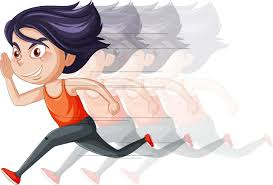

Home Page
Snake Game
Cool Tableau Graph
- I became an aunt when I was five years old
- To put that in perspective, I am the youngest of eight children

- I have double hitchchikers thumbs
- Just means my thumbs bend a lot further back than they normally should
- I ran track and cross country in high school
- That might not be the most fun fact, but it's a fact

- I once helped my older brother catch and kill a rattlesnake
- ...I just screamed to let him know there was a rattlesnake in the yard and then gave encouraging comments from very far away
- Two of my older brothers and I once turned our entire house into a mini golf course
- We even filmed it with commentating like the PGA Championship (all while my parents were out of town)
- Example of PGA Championship commentating: